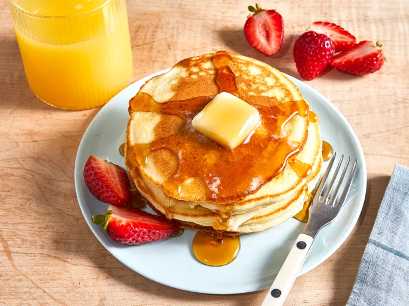

My Favourite Recipes
Welcome to my recipe book. Here you will find a collection of my favourite recipes, along with cooking tips and tutorials.
Recipe List
| Recipe Name |
Preparation Time |
Difficulty Level |
| Breakfast |
| Pancakes |
20 minutes |
Easy |
| Omelette |
15 minutes |
| Baked Chicken |
1 hour |
Medium |
| Chocolate Cake |
1.5 hours |
Hard |
Pancake Recipe

Ingredients for Pancakes
- 1 cup of flour
- 2 tablespoons of sugar
- 2 tablespoons of baking powder
- ½ teaspoon of salt
- 1 cup of milk
- 1 egg
- 2 tablespoons of melted butter
Steps to Make Pancakes
- Mix the dry ingredients together.
- Whisk in the milk, egg, and melted butter.
- Heat a skillet and pour ¼ cup of butter for each pancake.
- Cook until bubbles form on the surface, then flip and cook until golden brown.
Glossary of Cooking Terms
- Saute
- Cook quick in a small amount of oil over high heat.
- Bake
- Cook food in an oven using dry heat.
- Simmer
- Cook gently just below boiling point.
Cooking Tutorial
Special Characters in Recipes
Use fractions such as ½ cup of sugar, ¼ teaspoon of salt.
Submit Your Favourite Recipe